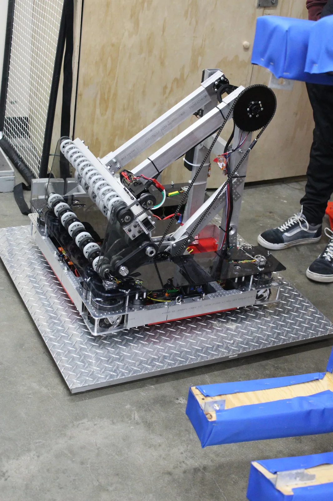

Kraken & Cthulhu
FIRST Robotics Competition: Charged Up
My Role
Manufacturing Lead and Drive Coach. I CAM'd and machined structural parts for Kraken and Cthulhu, grew the manufacturing subteam from 2 people to 8+ machinists, and helped assemble Cthulhu.

The team built Cthulhu in two weeks between regionals after competing with Kraken.
My work
- I made a machine certification tracker and part labels, then updated them over the following three years
- Tracked parts through CAD, CAM, and machining
- Pre-match and in-match strategy with the alliance's other two drive coaches, this season and the next two
The robots
- Kraken: the team's first competition swerve drive robot, with SDS modules and a double-jointed arm with gas-shock suspension
- Cthulhu: the team's second robot for the 2023 season
Awards
- Kraken: Regional Finalist, Central Valley Regional
- Cthulhu: Gracious Professionalism Award, Monterey Bay Regional